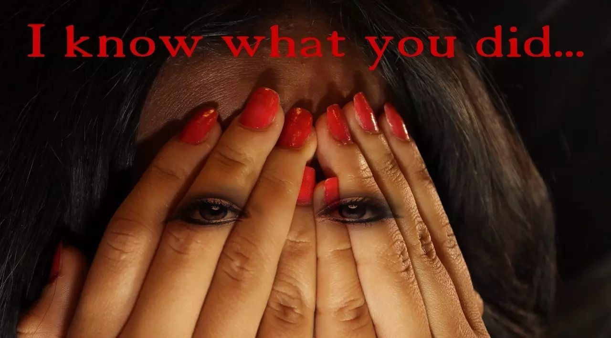
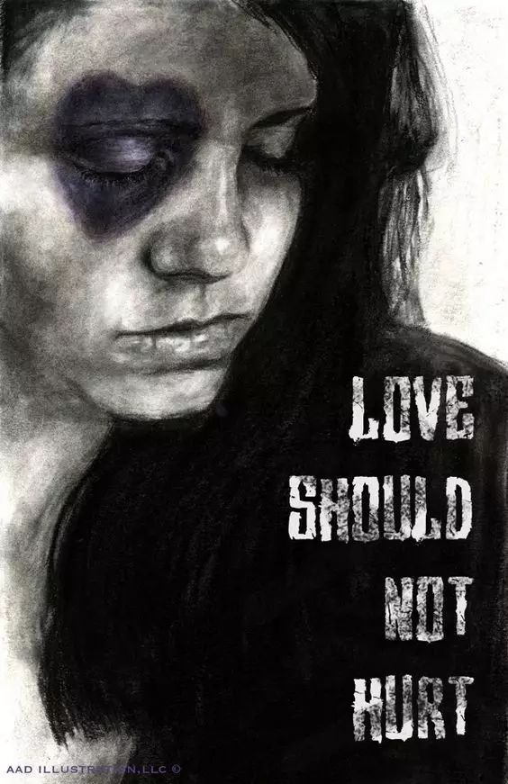
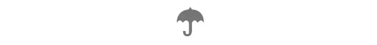
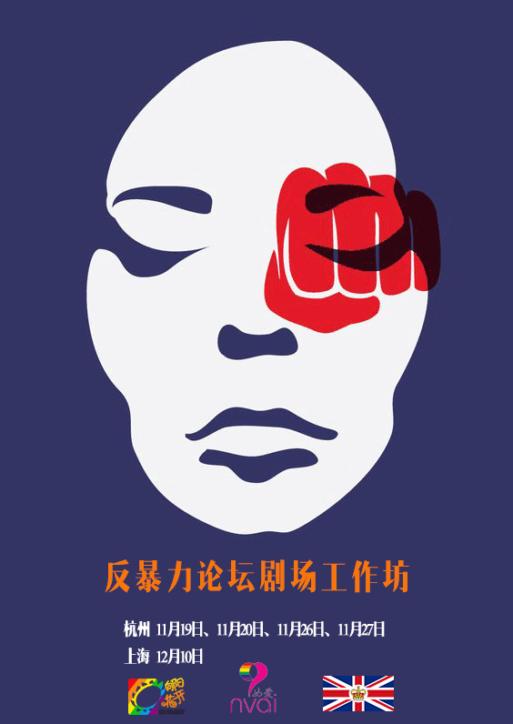
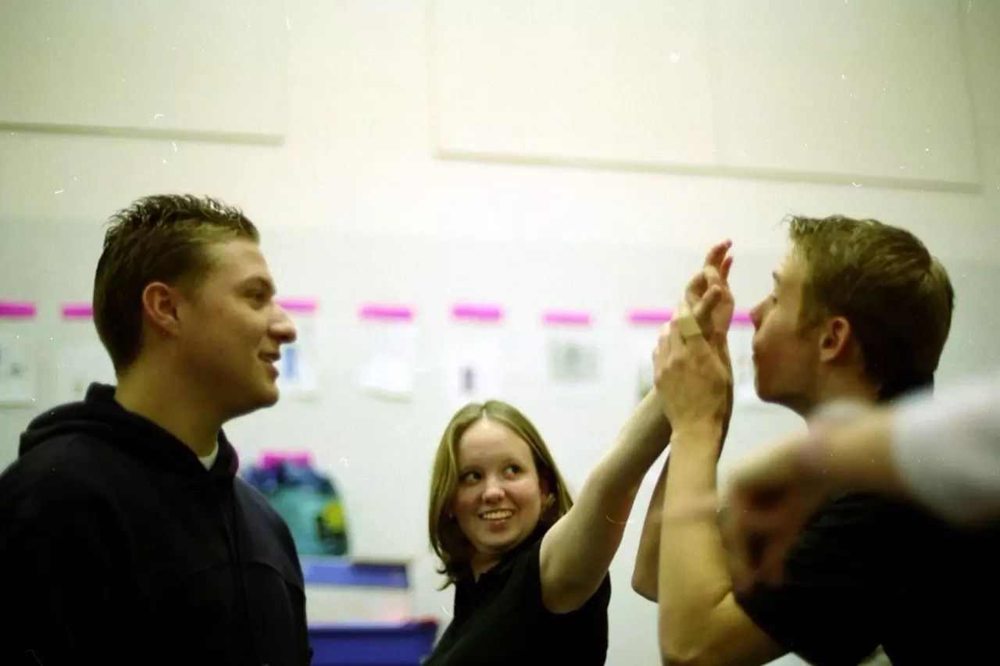
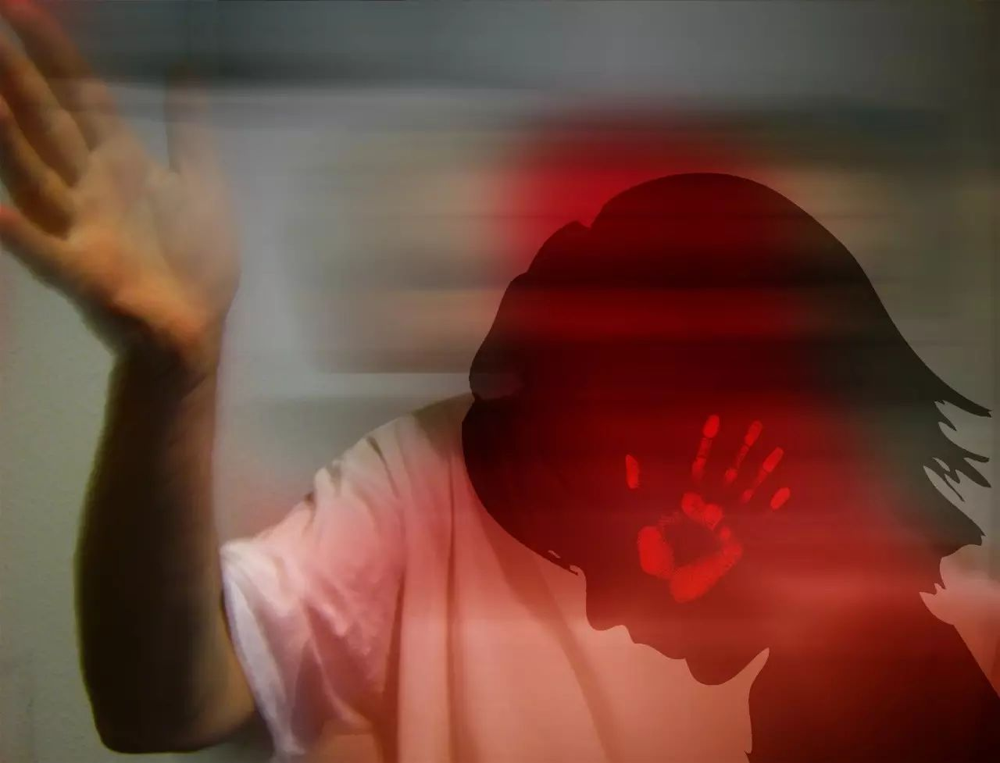
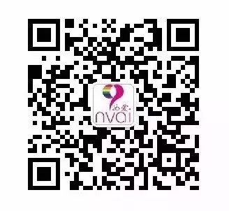

或许你听过家庭暴力、性别暴力
也许你身边的人正在深受暴力的迫害
数据显示
25%到2/3的女性经历过
至少一次亲密关系暴力的一种形式；
我国有24.7%的家庭存在家庭暴力
多数受害人为妇女、儿童、老人；
《亲密关系中的暴力调查报告》
性少数人群约有49.16%受到来自原生家庭的暴力
有46%受到来自亲密关系的暴力；
（上文数据来源于全国妇联统计及同语《亲密关系中的暴力调查报告》）


暴力是可以制止的，
只要全社会的人都能成为受害者背后的坚强后盾。
你会选择
假装听不到那些微弱而绝望的呼喊
继续“享受生活”、“履行责任”，有时表演正义。
还是和我们一起
团结起来，
反对一切基于性别、性取向和性别表达的暴力。
16日反暴力系列活动就要拉开帷幕啦！
什么是16日行动？
从11月25日“国际消除对妇女暴力日”到12月10日“国际人权日”之间的16天，世界各国开展各种教育倡导活动，保障性别人权、反对性别暴力，提高大众的反暴力意识。参与者选择这两个日子作为16日运动的起止日，是为了象征性地将暴力侵害女性与人权问题相联系，并强调暴力是侵犯人权的行为。

第一波反暴力论坛剧场
什么是论坛剧场？
论坛剧场是巴西著名艺术工作者Augusto Boal所发展的“受压迫者剧场”中有名的一个形式，虽名为论坛，但并不是以口语的方式进行论坛，而是以演出的形式进行探索。观众可化身为观演者，进入剧中，实际尝试如何改变。这突破了传统剧场观演关系，亦把行动的力量由演员转移到观众身上。
我们的工作坊包含什么？
a. 介绍论坛剧场的体系和内容
b. 论坛剧场游戏与练习
c. 以反暴力为主题，结合LGBT议题的论坛短剧剧本创作，排练
d. 杭州+上海，工作坊成果分享会（演出）
工作坊费用
工作坊免费！分享会（演出）免费！
（另外，主办方将承担工作坊参与者上海分享会期间往返杭州至上海的高铁路费。但由于本项目资金有限，活动期间的餐饮费用需要参与者自行承担。）

工作坊协作者：
张筱叶，香港城市大学犯罪学博士候选人，伦敦大学金史密斯学院应用戏剧研究生，曾协助戏剧工作坊人群包括：特殊需要青少年，在押犯，残疾人，老年人和儿童，目前在上海参与监狱戏剧项目。偏好探索故事与剧场的社会性，论坛剧场的持续学习者。曾参与的论坛剧场培训包括英国：Cardboard Citizens; Mojisola Adebayo; 中国台湾：赖舒雅。

主办方
向阳花开·杭州LGBT是一个由志愿者组成的民间公益社团，成立于2010年11月。社团通过在杭州地区开展多种形式的活动以及提供一定的社区服务，来为LGBT群体营造一种多元、开放、包容的社会文化氛围。
上海分享会合作方
上海女爱，成立于2005年6月，关注LBT议题，是倡导女性发声的非营利公益机构。主要以口述历史纪录、艺术文化展示等方式来建立与公众的对话，并长期持续开拓拉拉社群内部的交流，致力于促进性/别平等，推动社会多元和谐，减少基于性和性倾向的歧视和偏见。成立至今，举办各类文化沙龙主题活动、编撰口述历史书籍《她们的爱在说—上海会爱上女人的女人》、承办“拉拉影展-上海站”活动、制作华人拉拉地图等。
网址：http://www.nvai.org
微博：@上海女爱 http://weibo.com/nvai

本次活动感谢英国驻上海总领事馆的赞助和支持！
感谢杭州场地赞助
念·响回廊，是一个空间，一个现实的空间，也是一个无边界的心灵空间。她可以展示，可以宣讲；可以闲聊，可以静读；可以分享幸福，也可以宣泄忧伤；可以茶，也可以咖啡；欢迎随时来，也可以随时离开。只有一件事不那么随意，那就是，来的都是“同道”。
回廊理念：汇聚同道，分享公益，传达善意。做彼此的同伴，做自己的主人。
回廊功能：公益传播，文化传播，我的书吧。
发起人：骆筱红（老师），合作方：杭州歌声嘹亮科技有限公司，杭州利全文化创意有限公司，藏庐文化，之江公益沙龙。
感谢上海分享会场地赞助
上海青艾健康促进中心（简称上海青艾），是一家致力于改善性少数群体生存环境的专业社会组织。现有的主要服务有“青春解码”——青年热群性安全教育项目、”优质快检”——艾滋病预防检测、“青声入微”——心理干预服务、“点绿行动（鲜花360）”——艾滋病社会反歧视项目等。
本活动解释权归向阳花开·杭州LGBT所有，如有任何疑问，欢迎发邮件至hangzhoulgbt@163.com咨询。
扩展阅读
点击下方阅读原文，了解更多论坛剧场